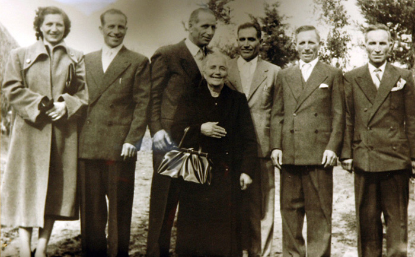

- LE FOTO DI FAMIGLIA -
scatti di Roberto Parnetti e archivio della Chiocciola

Foto della famiglia Torrini (tra parentesi l'anno di nascita): da sinistra: Lavinia (sorella 1917), Tripoli (1913), Vincenzo (1908), Zanobi (1906), Ezio (1904) e Guido (1901). Al centro la Mamma Clotilde Picci (1882).
Foto del 1936
Il sonetto del 1936 e la foto del 16 febbraio 2008
prima della vittoria del 1938 nella Chiocciola
Tripolino nel 2010 durante i festeggiamenti per il suo 97° compleanno organizzati da Roberto Parnetti